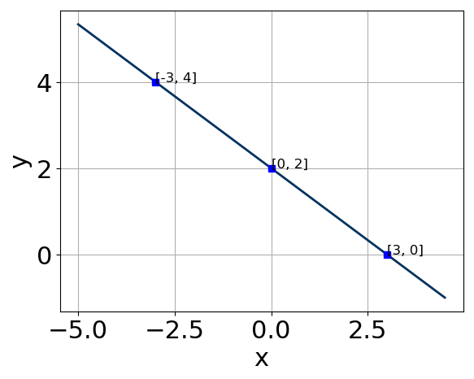
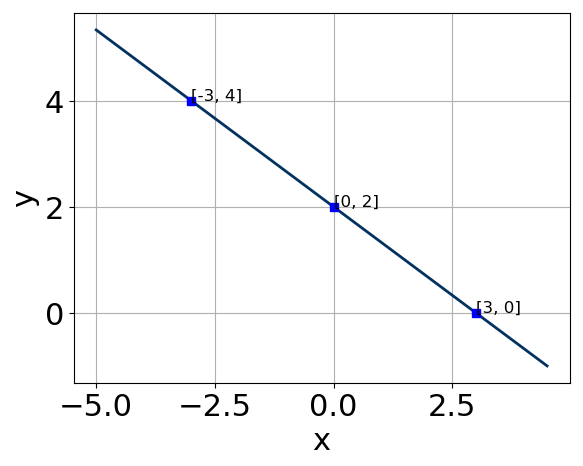

Slope-Intercept form:
Standard form:
Constructing the linear equation based on its graph.
First, watch the video below to learn how to convert from a graph to its linear function. You can use the notes here to follow along with the video and record your thoughts.

Slope-Intercept form:
Standard form: